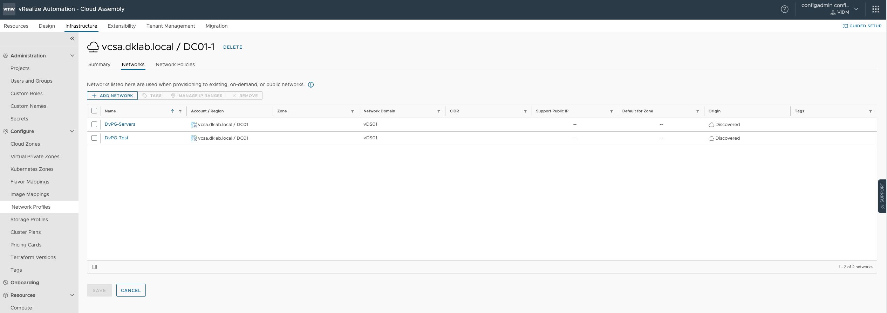

Rest API calls in VMware Aria Automation with PowerShell

Rest API calls in VMware Aria Automation with PowerShell
Use Case:
I’m often faced with the scenario where a client or colleague are attempting to perform an action and are met with the response that the feature isn’t in a GUI, but there is an API you can call. This scenario is common across the VMware stack of products as it’s not practical to have a button for everything, but it usually leads to the follow up question in some form of “well how do I call that?”. I wanted to write about a recent experience with a colleague as a means of showing one way to accomplish that.
Before I jump into the details, I wanted to add somewhat of a disclaimer that with any type of automation there are numerous ways to solve a particular problem. Based on my comfort with specific products and scripting languages, what’s below is how I was able to work with the client to address the problem. There is the possibility that another person could accomplish the same task in a different way and none of it is ‘wrong’.
A colleague came to me and asked about a way to assist a client looking to add several networks into a Network Profile within Cloud Assembly (a component of Aria Automation). While his client could have very easily clicked one-by-one in the UI, that is a tedious operation and runs the risk of human error. Based on the client’s familiarity with PowerShell, we opted to write a script to invoke the necessary API’s using the Invoke-RestMethod PowerShell cmdlet.
So, to frame up a bit more of the ‘how’, when faced with a scenario like this, we need to have a script that performs three steps:
Steps:
1. Get your authentication token/header configured
2. Find the appropriate URI and use a ‘GET’ method to look at the formatting and to help build a body
3. Find the appropriate URI and method (e.g. ‘PATCH’ or ‘POST’) in order to call that API and feed it the necessary information in the body
Step 1:
So, I need to provide a set of credentials to the CSP login URI. This will give me a refresh token which I can then feed to the IaaS login URI to get my access token. The access token will be what I can use to make the necessary calls into my Aria Automation environment. The URI’s and some more detail are provided in VMware KB 89129.
There are some potentially easier methods to authenticate to Aria Automation and invoke a REST API call (like the PowerVRA Module), but for my example below, I used all native PowerShell.
#BasicInfo:
$vraServer = "vra.corp.local"
#Get Credentials to build auth:
$credential = Get-Credential
$username = $credential.UserName
$pass = $credential.Password
$password = [System.Runtime.InteropServices.Marshal]::PtrToStringAuto([System.Runtime.InteropServices.Marshal]::SecureStringToBSTR($pass))
$authBody = @{
"username" = $username
"password" = $password
}
#Build Header:
$header = New-Object "System.Collections.Generic.Dictionary[[String],[String]]"
$header.Add("Accept","application/json")
$header.Add("Content-Type","application/json")
#Get Refresh Token:
$uri = "https://" + $vraServer + "/csp/gateway/am/api/login?access_token"
$refreshToken = Invoke-RestMethod -uri $uri -Method POST -Headers $header -Body ($authBody | ConvertTo-Json) -SkipCertificateCheck
$refreshToken = $refreshToken.refresh_token
$refreshTokenBody = @{
"refreshToken" = $refreshToken
}
#Get Access Token:
$uri = "https://" + $vraServer + "/iaas/api/login"
$accessToken = Invoke-RestMethod -Uri $uri -Method POST -Headers $header -body ($refreshTokenBody | ConvertTo-JSON) -SkipCertificateCheck
$accessToken = "Bearer " + $accessToken.token
#add access token to Header
$header.Add("Authorization",$accessToken)Step 2:
Now that I have the $accessToken variable set and added to my header, I can make any REST API calls I need.
For this example, we wanted to add a bunch of fabric-networks (in vSphere parlance DvPGs) to a network profile. In VMware Aria Automation, these are already available with the addition of my vCenter Cloud Account, just not associated with a network profile.
In order to enumerate the available fabric-networks, I am going to take my $header variable with the newly generated $accessToken added and call a ‘Get’ against the /iaas/api/fabric-networks/ URI.
#Get Fabric Network Ids:
$uri = "https://" + $vraServer + "/iaas/api/fabric-networks"
$fabricNetworks = Invoke-RestMethod -uri $uri -Method GET -Headers $header -Now that I have a full list, I wanted to isolate the list down to those on a specific Distributed Virtual Switch using the following:
$dvPGs = $fabricNetworks.content | Where {$_.name -like '*DvPG*'}Step 3:
Now that I have my list of fabric-networks, I wanted to build a JSON body that I could send to Aria Automation to add them to the network-profile in question. So, I used the following request to pull the necessary info:
#Get Network Profiles:
$uri = "https://" + $vraServer + "/iaas/api/network-profiles"
$networkProfiles = Invoke-RestMethod -uri $uri -Method GET -Headers $header -SkipCertificateCheckIn my lab I had a single network profile, so if I just run $networkProfiles | ConvertTo-JSON in PowerShell, we get the info we need for our body.
The fun with this specific example is that the info in the ‘GET’ request is slightly different than how we have to format it for the ‘PATCH’ request. Looking at the SwaggerUI interface (https://"YourAriaAutomationServer"/iaas/api/swagger) and looking at the Network Profile Section, I can see the URI for the PATCH call (/iaas/api/network-profiles/{id}) and that we need to feed an array of ID’s to a property called ‘fabricNetworkIds’. A couple of other good points to call out is to pay attention to any field or property marked as ‘Required’. If you’re unfamiliar with the SwaggerUI interface, selecting the ‘Model’ link within a Specific URI will give you that information. In my example, I see I need to have the ID for the network profile, the name of the network profile, and the regionID of the network profile.
(Side note… depending on what is in the REST Body, exercise some caution and testing with a PATCH or PUT command as in this specific case with the NetworkID’s, they will only add what is in the body and remove anything else. Essentially the body replaces what is already there instead of appending to an already existing list.)
Now that I have my body, we just repeat the process and invoke the call to the appropriate URI. The example below only has a couple of fabricNetworkIds specified, but the actual ask was for several hundred.
$body = @{
"name" = "REST_API"
"id"= "cce57ddd-d206-9999-870d-25b8775fb365"
"orgId" = "12131928-3bdd-9999-9e69-3edf5c318a7d"
"customProperties" = @{
"datacenterId" = "Datacenter:datacenter-3"
}
"externalRegionId" = "Datacenter:datacenter-3"
"cloudAccountId" = "8274acb1-bad2-40cf-1969-e3ed60c16956"
"isolationType" = "NONE"
"fabricNetworkIds" = @(
"fba96959-c0b2-99a6-bb7b-0da4c35b3eaf"
"21a52412-85a3-4b9d-a99b-0aaf19185755"
)
}
$uri = "https://" + $vraServer + "/iaas/api/network-profiles/" + $npId
Invoke-RestMethod -uri $uri -Method PATCH -Headers $header -Body ($body | ConvertTo-JSON -Depth 5) -SkipCertificateCheck
The result is beneficial for two reasons.
1. My colleague and his client have a way of adding the necessary DvPG’s to their network profile in a methodical way that avoids a lot of clicking.
2. The steps and much of the code above are reusable, so whatever the use case you’re attempting to solve for, you don’t have to start from scratch each time.
Hopefully this example helps anyone who is stuck or just looking for an example to keep in their back pocket of ‘how to’ for when that situation arises.
Guest Blogger:
I want to thank guest Blogger, Dave Kaber @dave_kaber, for taking the time to write this blog post and share with the #vCommunity. Hopefully Dave will be sharing some additional content in the future.